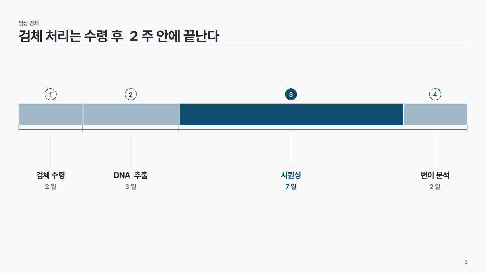
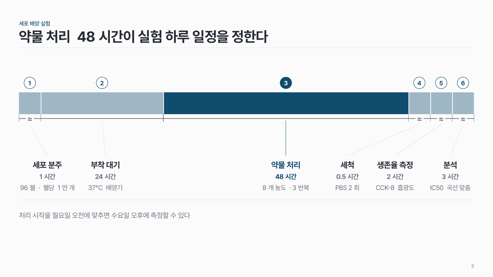

실험 절차 타임라인 flow-07
단계 막대 길이를 걸리는 시간에 비례시켜, 어느 단계가 일정을 좌우하는지 보여 줘요.

이 시안
5단계 · 날짜 단위 비례 · 짧은 단계 ≈ 표시 · 발현 대기 강조 · 결론 줄
슬라이드 제목: 발현 대기 3주가 전체 일정의 절반을 차지한다
언제 쓰나
실험 · 검사 절차가 시간 순서로 이어지고 단계마다 걸리는 시간이 달라서, 그 차이가 메시지일 때요. 발현 대기 3주, 시퀀싱 2주처럼 긴 단계를 짚어요.
구성
- 가로 시간축 위에 단계 막대를 이어 붙여요. 길이는 기간에 비례.
- 막대 위에 번호, 아래에 단계 이름 + 기간 + 설명 한 줄.
- 너무 짧은 단계는 최소 너비로 키우고 축에 ≈ 표시.
- 일정을 좌우하는 단계 하나만 진하게.
지킬 것
- 단계 3–6개, 모두 같은 단위로 (일, 주, 시간).
- 단계 이름 10자, 설명 20자 이내.
하지 말 것
- 막대를 모두 같은 길이로 그려 차이를 지우지 않아요.
- 단계 사이에 화살표를 하나씩 넣지 않아요.
시안 비교
같은 내용을 옵션만 바꿔 그렸어요. 그림을 누르면 크게 보여요.
A5단계 · 날짜 단위 비례 · 짧은 단계 ≈ 표시 · 발현 대기 강조 · 결론 줄
슬라이드 제목: 발현 대기 3주가 전체 일정의 절반을 차지한다

B4단계 · 비례가 다 맞는 경우(≈ 없음) · 설명 없음
슬라이드 제목: 검체 처리는 수령 후 2주 안에 끝난다

C6단계 · 시간 단위 · 최소 너비가 여럿
슬라이드 제목: 약물 처리 48시간이 실험 하루 일정을 정한다